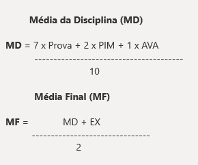

(Somente para os alunos matriculados no currículo 2023 em diante)
O aluno somente poderá ser aprovado e/ou prestar exames com o mínimo de 75% (setenta e cinco por cento) de frequência às atividades programadas para a disciplina.
Os critérios de promoção envolvendo simultaneamente a frequência e o aproveitamento escolar são os seguintes:
A Avaliação Presencial (AP) de cada disciplina poderá ser composta de questões objetivas e questões discursivas, de sorte que as questões discursivas tenham peso de 50% (cinquenta por cento) do valor da AP (Avaliação Presencial).
O Exame de cada disciplina será composto de modo similar à Avaliação Presencial em estrutura e tipos de questões, excetuando-se TCC, estágios supervisionados e as disciplinas práticas.
A Avaliação Substitutiva de cada disciplina será composta de modo similar à Avaliação Presencial em estrutura, pesos e tipos de questões.
Para incentivar o uso pelo aluno das novas tecnologias de comunicação, interação e informação indispensáveis para uma formação de qualidade em um curso da EaD, as avaliações virtuais terão 10% (dez por cento) de sua composição atribuídos a título de participação e interação no ambiente virtual de aprendizagem.